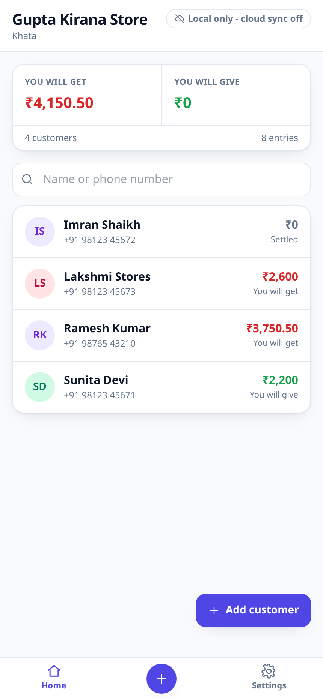
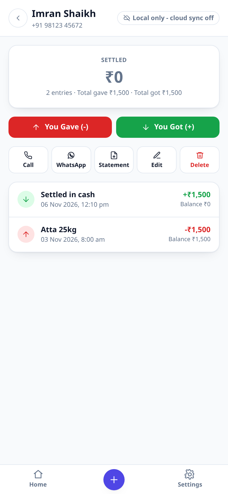
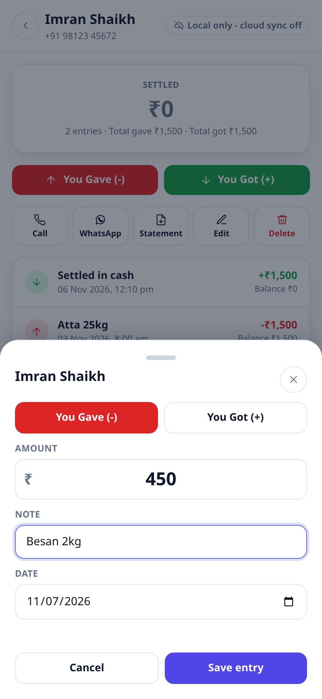
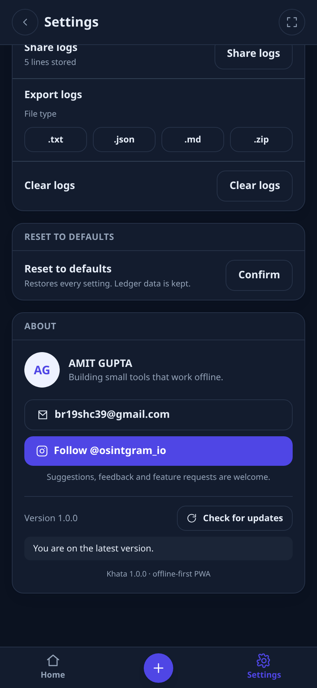

Version 1.0.0 · installable PWA · works offline
The shop ledger that keeps working when the network does not.
Khata is a digital udhar (credit) and jama (payment) register for kirana shops, tailors, mechanics and anyone who sells on credit. Every entry is written to the phone first, so the app never waits for a connection. When you are back online, a Cloudflare Worker syncs the queue and texts the customer an SMS alert.
No account, no sign-up, no server needed to start. Your ledger lives in the browser's IndexedDB on your own device.

Everything the app does
This is the complete function list, not a teaser. Each item below is wired to working code in the app.
Dashboard
- Shop totals. Two figures at the top: total you will get (red) and total you will give (green), summed across every live entry.
- Customer list. Every customer with their initials avatar, phone number, net balance and a plain-language label: "You will get", "You will give" or "Settled".
- Instant search. Filters by name or phone digits as you type, with a live result count and a "no match" state that names what you typed.
- Add customer. The floating button and the centre button in the bottom bar both open the same form.
- Counters. Customer count and total entries for the whole shop.
Customer ledger
- Net balance card. The current position in one number, coloured red for money owed to you and green for money you owe, plus total gave and total got.
- "You Gave (-)" and "You Got (+)". Two large buttons open the entry form with the direction already selected; you can flip it inside the form.
- Timeline. Newest first, each row showing note, date and time, signed amount and the running balance after that entry. Tap any row to edit or delete it.
- Call. Opens the dialler with the customer's number.
- WhatsApp reminder. Opens WhatsApp with a pre-filled balance reminder. The wording is editable in Settings and supports {name} {shop} {balance}.
- Statement. Generates a real PDF (jsPDF + AutoTable, bundled locally) with shop header, customer details, the full table and running balance, totals and page numbers.
- Edit and delete. Edit the name or phone; deleting a customer removes their entries too, after a confirmation.
Entry form
- Amount. Accepts 1,250.50 or ₹1,250; stored as integer paise so totals never drift by a rounding error.
- Note. Optional description, up to 200 characters.
- Date. Defaults to today, backdating allowed, future dates refused.
- Validation. Inline, translated messages under the field that failed, with the invalid field outlined.
- Delete. Editing an existing entry offers a delete that queues a tombstone for the server.
Offline engine and sync
- IndexedDB first. Customers and entries are written to the device before anything else; there is no server in the critical path.
- Status badge. Online, "Offline - changes saved locally", "Syncing...", "All changes synced", "Sync failed - will retry", or "Local only - cloud sync off", with the pending row count.
- Three flush triggers. The online event, the Background Sync API (which the service worker can run with no tab open), and a configurable interval (30s to 15m).
- Bounded retries. Exponential backoff with jitter, capped at five attempts; a rejected token stops retrying instead of hammering the server.
- Idempotent by design. Every row carries a client-generated UUID, so a replayed batch cannot duplicate an entry.
- Service worker. Pre-caches the whole shell, serves navigations from cache and refreshes in the background, and never caches API calls.
Settings
- Appearance. Theme (system / light / dark), six accent colours, text size (small / default / large), layout density (comfortable / compact) and a full-screen toggle. All persist and apply immediately.
- General. Language (English / हिन्दी), shop name and phone (used on statements and reminders), SMS alerts on or off, automatic sync, sync interval, sync server URL and token, "ask before deleting", and the WhatsApp reminder template.
- Data and backup. Download a JSON backup of every customer and entry; restore one by merging it back; delete all ledger data while keeping settings. Live row counts are shown.
- Diagnostics. Log collection is on by default. Share logs through the system share sheet, or export as .txt .json .md .zip, and clear them. The zip is built in the app with no library.
- Reset to defaults. Restores every setting, keeps the ledger.
- About. Developer profile, contact email, Instagram follow button, version and "Check for updates".
Server side (Cloudflare Worker)
- POST /api/sync - batch upsert of customers, transactions and deletions, validated row by row; returns which ids were accepted and why any were rejected.
- POST /api/transaction - single live entry through the same path.
- GET /api/customers - the server's own ledger, for verification.
- GET /api/health - reports real D1 and KV state, not just "ok".
- POST /api/sms/retry - re-sends failed SMS rows.
- Automated SMS. "Dear [Name], Rs.[Amount] Gave on [Date]. Net Balance: Rs.[Balance].- KhataApp", sent through Fast2SMS or Twilio, at most once per entry, with a daily cap.
- Bearer-token auth against Cloudflare KV (token → shop id), soft deletes, and structured JSON logs with a request id.



Install it like an app
- Android / Chrome. Open the app, tap the ⋮ menu and choose "Install app" (or "Add to Home screen"). It opens full screen with its own icon.
- iPhone / Safari. Open the app, tap Share, then "Add to Home Screen".
- Desktop. Chrome and Edge show an install icon in the address bar.
- Nothing to download. The installable package is the same static site; the service worker stores it on the device on first visit.
Try it in 30 seconds
- Open the app and add a customer with a name and phone number.
- Tap "You Gave (-)" and enter 500.
- Turn on aeroplane mode and add another entry: it still saves.
- Come back online and watch the badge go from "Offline" to "Synced".
Without a sync server the badge says "Local only - cloud sync off". Everything still works; nothing leaves the device.
Turn on cloud sync and SMS
The Worker is included in the repository. You deploy it to your own Cloudflare account, so the SMS credit and the data are yours.
# 1. create the database and the token store
npx wrangler d1 create khata
npx wrangler kv namespace create AUTH
# put the returned ids into worker/wrangler.toml, then:
npx wrangler d1 execute khata --config worker/wrangler.toml --remote --file worker/schema.sql
npx wrangler secret put SHOP_TOKEN --config worker/wrangler.toml
npx wrangler deploy --config worker/wrangler.toml
# 2. in the app: Settings > General
# Sync server URL = https://khata-api.<your-subdomain>.workers.dev
# Sync token = the SHOP_TOKEN you just setFor SMS set SMS_PROVIDER to fast2sms or twilio in worker/wrangler.toml and add the matching secrets. With SMS_PROVIDER = "none" no message is attempted and the API says so instead of pretending.
What it deliberately does not do
Stated plainly so nobody is surprised later. These are known boundaries, not bugs being hidden.
- One shared token, not multi-tenant accounts. The Worker maps a bearer token to a shop id; it does not have sign-up, passwords or per-user roles. That is the next step if several people need separate logins.
- No multi-device merge. Entries are append-only and idempotent, but if the same customer is edited on two phones at once the later update wins. There is no conflict UI.
- SMS needs your own gateway. Nothing is sent until you configure Fast2SMS or Twilio and pay for that account. Delivery is logged per entry in sms_log, including failures.
- No inventory, GST invoicing or billing. Khata is a credit ledger, not accounting software.
- Data lives in the browser profile. Clearing site data deletes the ledger, so use the backup button. Installing the app protects it better than a normal tab, but a backup is the real safety net.